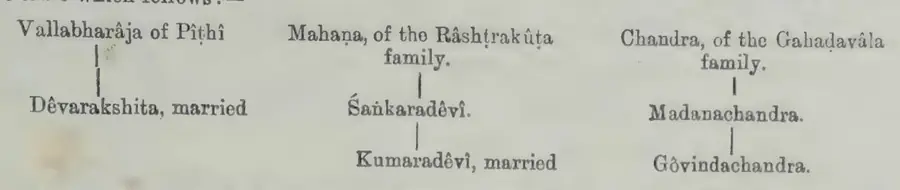

Sárnáth inscription of Kumaradéví
SARNATH INSCRIPTION OF KUMARADEVI.
BY STEN KONOW.
The slab on which the inscription published below is incised was found during the excavations carried on by Mr. Marshall and myself in Sārnāth, in March 1908. It was dug out to the north of the Dhamēkh stūpa, to the south of the raised mound running east and west over the remnants of the old monasteries of the Gupta period. The writing covers almost the whole of the surface of the stone, viz. 21" × 15½", and it is in a perfect state of preservation. The average size of the letters is ½".
The characters are Nāgarī, of a very ornamental type, and the engraving has been done with considerable skill. Of individual letters, the form of the cerebral ṭa in -bhaṭaḥ and kīndapa-ṭikaḥ in line 8 is worthy of notice. There are comparatively few orthographical peculiarities. Y is used for b throughout, and ña is used instead of the anusvāra in sudhāśśā-, line 11. There are some few miswritings such as harmmā- for dharmmā-, 1. 6; prakshātō for prakhyātā, 1. 8; vishmayakarō for vismaya- and =ashmūdṛīśaiḥ for =asmūdṛīśaiḥ, 1. 13; =nēnrābhirāma- for -nētr-, 1. 15; nri- for tri-, 1. 22; mahībhūjaḥ for mahībhujaḥ, 1. 19, etc. The forms Kumaradici,
1 For other instances in which naptri has this meaning, see above, Vol. IV. p. 329 and note 2.
2 I.e. the god of war.
3 I.e. the Dānavas or demons.
4 Literally, 'the bearer of the makara- banner.'
5 This would give 100 nivartanas for each of the 40 donees.
ll. 11 and 22, and vihárô in ll. 23 and 26, on the other hand, are vouched for by the metre. Kumara instead of kumára is common in Mâhârâshtrî Prâkrit, and a form Kumaravâla for the usual Kumârapâla occurs in Hêmachandra's Dêsînâmamâlâ, I. 104, 88.1 And vihâra instead of vihâra is justified by Pâpini VI, 3. 122.
The language is Sanskrit, and, with the exception of the invocation to Vasudhârâ in l. 1, the whole of the inscription is in verse. There are altogether twenty-six verses. Of these thirteen (Nos. 3, 5, 6, 7, 11, 12, 13, 17, 18, 19, 21, 23 and 24) are in the Śârdûlavikrîđita, five (Nos. 1, 10, 14, 15 and 20) in the Mâlinî, four (Nos. 4, 16, 22 and 25) in the Vasantatilakâ; three (Nos. 8, 9 and 26) in the Anushṭubh, and one (No. 2) in the Sragdharâ metre.
The object of the inscription is to record the construction of a vihâra by Kumaradêvi, one of the queens of Gôvindachandra of Kanauj. The wording of verses 21-23, in which her gift is mentioned, is not quite clear. We are first told, in verse 21, that a vihâra was constructed, which apparently contained an image of the goddess Vasudhârâ. The following verses are not quite clear. Rai Bahadur V. Venkayya has suggested the following explanation, which I think is a very plausible one. Jambukî drew up a copper-plate, in which she represented to Kumaradêvi that the Dharmachakra-Jina originally set up by Dharmâsôka required to be repaired or set up again. This copper-plate must have contained information about the original setting up of the Dharmachakra-Jina and further details about its maintenance and repairs. Kumaradêvi, who was apparently a stranger to the country round Benares, accepted her representation and raised her to the rank of "the foremost of pattalikâs."2 Mcreover, she restored the Jina or set up a new one and placed it in the vihâra built for Vasudhârâ, or in another one constructed for the purpose, and the wish is expressed that, after having been placed there, he may remain there for ever. It seems necessary to infer that the Śrîdharmachakra-Jina, which is said to have existed in Dharmâsôka's time, was an image of the Buddha, and that the vihâra built by the orders of Queen Kumaradêvi for him, was a shrine, a gandhakuṭî. It is difficult to explain the wish that he, i.e. the image, may reside there for ever, under any other supposition.
The inscription can be divided into four parts. After an invocation of Vasudhârâ (v. 1) and the moon (v. 2) vv. 3-6 give some information about some rulers or generals of Piṭhî or Piṭhikâ. We learn that, in the lunar race, there arose a chief called Vallabharâja, the lord of broad Piṭhikâ (v. 3). The following verse introduces the lord of Piṭhî Dêvarakshita, without saying anything about his relationship to Vallabharâja. He is described as the full moon of the lotus of the Chhikkôra-vaṇśa, and we are told that he even surpassed Gajapati in splendour. Dêvarakshita is again referred to as the lord of Piṭhî in the second part of the inscription, and it therefore seems necessary to interpret vv. 5-6, which apparently refer to a son of his (tasmâd-âsa, etc.) as an explanation of his relationship to Vallabharâja, who would then be his father.
The second part of the inscription, vv. 7-13, contains the information that Dêvarakshita was defeated by Mahaṇa, the maternel uncle of the Gauḍa king, who thus firmly established the throne of Râmapâla, and subsequently bestowed his daughter Śaṅkaradêvi on the Piṭhî lord. Their daughter was Kumaradêvi, in whose praise the present inscription was written.
The third part, vv. 14-20, then contains the genealogy of the Gahaḍavâla family, to which Kumaradêvi's husband Gôvindachandra belonged. It agrees with the list given in most inscriptions of this latter king, but does not carry us further back than to his grandfather. We are first introduced to Chandra, the Chandradêva of Gôvindachandra's inscriptions. His son
1 See Pischel, Grammatik der Prakrit-Sprachen § 81.
2 Pattalikâ is the feminine form of pattalaka, which occurs in the Buguḍa plates of Mâdhavavarman, above, Vol. III, p. 44, l. 33, in connexion with vaisvâsika.
was Madanachandra, elsewhere known as Madanapâla, who again was the father of Gôvindachandra. He is said to have saved Benares from the wicked Turushka-soldier.
The fourth part of the inscription (verses 21-23) specifies the gifts of Kumaradêvi, and her praise is sung in verse 24. Verses 25-26 then inform us that the inscription, which is here called a prasasti, was composed by the poet śrī-Kunda, and engraved by Vāmana.
Gôvindachandra is the well-known king of Kanauj, whose inscriptions are dated between A.D. 1114 and 1154. Our inscription teaches us that he guarded Benares against the Turushkas, i.e. the Muhammadans. We do not know of any Muhammadan expedition against Benares in Gôvindachandra's time. In A.D. 1033 a Muhammadan army under Ahmad Niāltigin arrived at the town, but only stayed there for a day,1 and there is no indication of a permanent settlement. We know, on the other hand, that Mussulman settlers remained in the country about the Jamna from the days of Mahmud and down to the end of the 12th century.2 It seems probable that Gôvindachandra took some action against such settlers, and the term turushkadanda, which occurs in many of his and his predecessors' inscriptions, gives us a hint as to the nature of this action. The word turushkadanda has been variously translated as "tax on aromatic reeds" and "Muhammadan amercements."3 The information furnished by our inscription seems to show that it was in reality a tax on Muhammadans, the exact nature of which cannot, however, be determined.
Our inscription introduces us to a new queen of Gôvindachandra, Kumaradêvi, the granddaughter of Mahaṇa. Three other queens are already known from inscriptions, viz. Nayaṇakêlidêvi,4 Gôsaladêvi5 and Dâlhaṇadêvi.6 While Gôvindachandra was himself an orthodox Hindú, his fourth wife Kumaradêvi was a Buddhist. According to information kindly supplied by Mahâmahôpâdhyâya Hara Prasâd Śâstrī, the king had still another Buddhist wife Vâsantadêvi, who is mentioned in the colophon of a manuscript of the Ashṭasâhasrikâ in the Nepal Darbar Library (No. 381 of the third collection). The colophon runs:—śrī-śrī-Kâdayakubj-âdhipaty-aśrapati gajapati-narapati-râjya-trayâddhipati-śrimad-Gôvindachandradêrasya pratâparašataḥ râjnî-śrī-pravara-Mahâyâna-yâyinyâḥ paramôpâsikâ-râjñî-Vâsantadêvyâ dêyadharmmô=yañ . . . . It is possible that Vâsantadêvi and Kumaradêvi are one and the same person, one of the meanings of vâsanta being "youth" = kumâra. It is, however, more probable that they are two different persons.
Some information about Mahaṇa, the father of Kumaradêvi's mother, and about the lord of Pithî, her father, can be gleaned from Sandhyâkara Nandi's Râmacharita, which work has been brought to light by Mahâmahôpâdhyâya Hara Prasâd Śâstrī.7 We are there told that Mahaṇa was the maternal uncle of the Gauḍa king Râmapâla. Vigrahapâla, the father of Râmapâla, made a successful war against the Chêdi king Karṇa of Dâhâla, of whom we possess an inscription dated Kalachuri Samvat 493=A.D. 1042.8 Karṇa's reign probably extended over a long period.9 We cannot, therefore, determine when the war against Vigrahapâla took place. We have an inscription of the time of Vigrahapâla's grandfather Mahîpâla, dated A.D. 1026,10 and Mahîpâla's son Nayapâla reigned at least 15 years.11 Vigrahapâla's accession cannot, therefore, be placed earlier than A.D. 1041. His son Râmapâla, who was preceded on the throne by two brothers Mahîpâla II. and Śúrapâla, was a contemporary of
1 See H. M. Elliot, The History of India as told by its own Historians, Vol. II. 1869, pp. 112 and ff.
2 Ibid., pp. 250 and ff.
3 See Führer, Journal Bengal Society, Vol. LVI. Pt. I. p. 113.
4 Above, Vol. IV. p. 103.
5 Kielhorn, Northern List, Nos. 127 and 131.
6 See Führer, loc. cit. p. 115, 1. 19.
7 Proceedings of the Asiatic Society of Bengal, 1900, pp. 70 and ff.
8 Kielhorn, Northern List, No. 407.
9 See Kielhorn, above, Vol. II. pp. 302 and ff.
10 Kielhorn, Northern List, No. 59.
11 Ibid, No. 642.
Śaṅkaradêvî, the mother of Gôvindachandra's queen Kumaradêvî. It therefore seems probable that Vigrahapâla's accession should be placed about A.D. 1050, and Râmapâla's reign in the last part of the eleventh century. Mahaṇa, Śaṅkaradêvî's father, would then be a contemporary of both of them. The Râmacharita, which calls him Mathana or Mahana, states that he was a Râshṭrakûṭa, and the maternal uncle of Râmapâla. It therefore becomes probable that Vigrahapâla married a Râshṭrakûṭa princess in addition to the daughter of the Chêdi king Karṇa who was, according to the Râmacharita, given to him after the war alluded to above. Mahaṇa was Ramâpala's right hand, and was of great assistance in the war against Bhîma. Among the feudatories of the Pâla king in that war, the Râmacharita mentions Vîraguṇa, the râja of Pîthî who is described as the lord of the south. Dêvarakshita of Pîthî is also mentioned, but not as a feudatory. He must be identical with the Dêvarakshita of our inscription, and it becomes probable that the Pîthî ruler Vîraguṇa had originally stood on Râmapâla's side, while Dêvarakshita later on rose against him. He hailed from Pîthî or Pîthikâ, which according to the Râmacharita was situated in the south. Now piṭhi or pîthikâ is synonymous with piṭha, and it is therefore possible that Pîthî is identical with Pîthâpuram.1 We know that a branch of the Eastern Chalukyas reigned in Pîthâpuram in the second half of the twelfth century, and that the town had already been conquered by Pulikêsin II. No historical information is forthcoming about the earlier Chalukya princes of the Pîthâpuram branch. The real history of the family only seems to begin with Vijayâditya III., whose coronation took place A.D. 1158.2 It should also be noted that the genealogy given in the Pîthâpuram inscriptions hardly can be correct. Mr. Sewell has drawn my attention to the fact that only four generations are enumerated between Bêta, who reigned in A.D. 925, and Vijayâditya III., who was crowned in A.D. 1158.
Before this branch became established in Pîthâpuram, the place was one of the strongholds of the Vêngî province of the Eastern Chalukyas. In the last part of the 11th century, the reigning king was Kulôttunga Chôđadêva, who first was ruler in Vêngî but who in A.D. 1070 was anointed to the Chôđa kingdom. Vêngî was then ruled by viceroys, first by his uncle Vijayâditya VII. then by his sons Râjarâja (1077-78) and Vîra Chôđa (from 1078). Mr. Venkayya suggests that this latter viceroy may be identical with the Vîraguṇa of the Râmapâlacharita. Dêvarakshita was then probably a general under the viceroy of Vêngî. He is said to have surpassed even the glory of Gajapati. As this epithet is used by some of the Eastern Gaṅgas, it is possible that it here refers to Anantavarman Chôđagaṅga. The Kaliṅgattu Paraṇi3 describes an expedition undertaken by Kulôttunga I. against this king, and Dêvarakshita may have played a rôle in it. We do not know anything about the Chhikkôra family, to which Dêvarakshita belonged.
The marriage of Dêvarakshita's daughter to king Gôvindachandra perhaps accounts for the relationship between the Chôłas and the Gâhađavâlas commented on by Mr. Venkayya in his Annual Report for 1907-08, para. 58 and ff. An incomplete Gâhađavâla inscription has recently been found immediately after a record of Kulôttungadêva of A.D. 1110-11, in Gaṅgaikonđa-chôłapuram, which it is tempting to bring into connexion with Gôvindachandra's marriage. Mr. Venkayya carries the acquaintance of the Gâhađavâlas with the Chôła kings farther back to the expedition of Râjèndra Chôła towards the kings on the banks of the Ganges, mentioned in the Tiruvâlaṅgâdu plates, and it seems very probable that this expedition led to the establishment of friendly relations with the north. Among the princes conquered by Râjèndra Chôła was Dharmapâla of Daṇdabhukti, and the lord of Daṇdabhukti figures amongst the feudatory kings who, according to the Râmapâlacharita, assisted Râmapâla in his war against Bhîma.
1 Compare the forms Pîthapura and Pîthâpuri, above, Vol. IV. p. 37, 357. Note 4.
2 See Hultzsch, above, Vol. IV. p. 223.
3 Ind. Ant. Vol. XIX. p. 329 ff.
The relationship between the various persons mentioned in our inscription will be seen from the table which follows:—

According to verse 25, the inscription was composed by Kunda, who describes himself as a lion to the tīrthika-elephants, a Rôhaṇa mountain, full of the splendid gems of poetical composition, a poet in eight bháshás, and an intimate friend of the king of Vaṅga. He is not elsewhere known. His name does not occur in the Saduktikarṇâmṛita,1 nor, so far as I know, in any other anthology. The engraver was the śilpīn Vāmana.
TEXT.
- 1 श्रीं2 नमो भगवत्यै आर्यवसुधारायै ॥ 3समवतु वसुधारा धर्मपीयूषधारा-
प्रशमितवहुविश्रोहामदुःखोरुधारा । धनकनकसमृद्धिं भूर्भुवः श्रुः4 किरन्ती
तद- - 2 खिलजनदैन्यान्याजयन्ती जगन्ति ॥ [१*] 6नेत्रैरुत्कण्ठितानां चरणमुपनयंश्चा-
रुचन्द्रोपलानाम्मानग्रन्थिमिमिन्दन् सह कुमुदवनीमुद्रया मानिनीनाम् ।
दग्धन्दग्धेश्वरेणा[मृ]- - 3 तनिकरकरैर्जीवयन् कामदेवं कान्तोयं कौमुदीनां स जयति जगदालोकदीप्र-
प्रदीपः ॥ [२*] 6वंशे तस्य नमस्यपौरुषजुषि प्रस्फारकीर्तितृषि द्राक्
शौचेन सु[राप]- - 4 गामदमुषि प्रत्यर्थिलक्षीरुषि । वीरो वल्लभराजनामविदितो मान्यः स
भूमीभुजां जेतासीवृथुपीठिकापतिरतिप्रीढप्रतापोदयः ॥ [३*] 7क्लिकोरवंशकु-
मुदोदयपूर्ष- - 5 चन्द्रः श्रीदेवरक्षित इति प्रथितः ष्टथिव्याम् । पीठोपतिर्गजपतेरपि राज्य-
लक्ष्मीं लक्ष्म्या जिगाय जगदेकमनोहरश्रीः ॥ [४*] 8तस्मादास पयोनि-
धेरिव विधु- - 6 ल्लीवण्यलक्ष्मीविधुर्नेत्रानन्दसमुद्रवर्द्धनविधुः कीर्तिद्युतिश्रीविधुः । सौजन्यैकनिधिः
स्फुरद्गुणनिधिर्गाभीर्यवारान्निधिर्हर्माद्वैतनिधिः9 स च[ण्डि]म- - 7 निधिः शस्त्रैकविद्यानिधिः ॥ [५*] 10दीनानामभिवाञ्छितैकफलदः प्रत्यक्ष-
कल्पद्रुमो दृष्यद्वैरिगिरीन्द्रभेदनविधौ दुर्वारवज्रश्च यः । कान्तान[१*]म्मद-
1 Rajendra Lala Mitra's Notices of Sanskrit Manuscripts, Vol. III. pp. 134 and ff. 2 Expressed by a symbol
3 Metre: Mālinf.
4 Read खः.
5 Metre: Śragdharā.
6 Metre: Śārdūlavikrīḍita.
7 Metre: Vasantatilakâ.
8 Metre: Śārdūlavikrīḍita.
9 Read धर्माद्वैतं०.
10 Metre: Śārdūlavikrīḍita.
8 नज्वरोपशमने सिद्धौषधोपल्लवो वाहुर्यस्य वभूव भूतलभुजामन्तश्चमत्कारिणः
॥ [६*] १गौडेद्वैतभटः सकाण्डपटिकः क्षत्रैकचूडामणिः २प्रक्षातो
9 महणाङ्गपः क्षितिभुजाम्मान्योभवन्मातुलः । त(तं) जित्वा युधि देवरक्षि-
तमधात् श्रीरामपालस्य यो लक्ष्मीं निर्जितवैरिरोधनतया देदीप्यमानो-
दयाम् ॥ [७*] ३कन्या महण-
10 देवस्य तस्य कन्येव भूभृतः । सा पीठीपतिना तेन तेनेवोढा स्वयम्भू(भु)वा
॥ [८*] ४ख्याता शङ्करदेवीति तारेव करुणाशया । व्यजेष्ट कल्पवृक्षाणं
लता दानोद्यमेन या ॥ [९*] ५अ-
11 जनि कुमरदेवो हन्त देवोव ताभ्यां शरदमलसुधाङ्गोशारुलेखेव रम्या ।
दुरितजलधिमध्याल्लोकसुद्धर्तुकामा स्वयमिह करुणार्त्ता तारिणौवावतीर्णा ॥
[१०*]
12 ६याम्रेधाः प्रविधाय शिल्परचनाचातुर्यदर्प्य व्याधाद्यद्वक्तेण जितस्तुषारकिरणो
ह्रीणः स खस्योभवत् । रात्रावुद्गममातनीति मलिनो जातः कलङ्की ततस्त-
13 स्याः सुद(सुन्द)रिमा स ७विषयकरो वाचः ८किमष्मादृशैः ॥ [११*] ९चित्र-
च्चञ्चलदृक्कुरङ्गमवधूवन्धस्फुरद्वागुराम् विभ्राणा तनुसम्पदम्पूविलसत्कान्त्याभिकान्त-
श्रिया ।10
14 खेलत्स्रोरसमुद्रसान्द्रलहरीलावण्यलक्ष्मीमुपं मोषं शैलसुतामदस्य दधती सौभाग्य-
गर्वेण सा ॥ [१२*] 11धर्माद्वैतमतिर्गुणाहितरतिः प्रारब्धपुण्याचिति-
15 दीनोदारधृतिर्मतङ्गजगतिर्नेत्रा(त्रा)भिरामाकृतिः । शास्तुन्यस्तनतिजनोदितनुतिः
12कारुण्यकेलिस्थितिनित्यश्रीवसतिः कृताघविहतिः स्फायद्गुणाहंक-
16 तिः ॥ [१३*] 13जगति गहडवाले क्षत्रव(वं)शे प्रसिद्धेजनि नरपतिचन्द्रश्चन्द्र(मा)-
नामा नरेन्द्रः । यदसहननृपाणाङ्गामिनीवाष्पवाहेः(हैः) शितितरमिदमासोद्या-
मुन(नं) तू(न्)नमभः ॥ [१४*] 14नृ-
17 पतिमदनचन्द्रश्चण्डभूपालचूडामणिरजनि स तस्माद्विभदेकातपत्र[म्*] । धरणि-
तलमनल्पप्रौढतेडो(जो)नलश्रीः श्रियमपि च मघोनः स्वश्रियाधो दधानः
॥ [१५*] 15वाराण-
18 सीं भुवनरक्षणदक्ष एको 16दृष्टान्तुरुष्कसुभटादवितुं हरेण । उक्तो हरिस्स
पुनरत्र वभूव तस्माद्गीविन्दचन्द्र इति प्रथिताभिधानः ॥ [१६*] 17वत्साः
कामदुहां कणा-
19 नपि पयःपूरस्य 1पातु न ते चित्तं प्रागलभन्त याचकमनःसन्तोषनित्यव्ययात् ।
त्यागैर्यस्य 2महीभूजः प्रमुदिते तद्याचकानाञ्चये स्वच्छन्दाहितनित्यनिर्भरपयः-
20 पानीत्सवैरासते ॥ [१७*] 3यद्विदेषिमहीभुजां पुरवरे प्रभ्रष्टहारावलीर्व्याधास्तन्मृग-
पाशवन्धमनसा गद्भन्ति नैव भ्रमात् । व्याधाः सस्तसुवर्णकुण्डलमहि-
भ्रान्त्या
21 तदत्यायतेदंग्डैर्द्रागपसारयन्ति च भयप्रोत्क्रम्पिहस्तप्तजः ॥ [१८*] 4यस्योत्सन्नवि-
रोधिभूपतिपुरप्रासादपृष्ठोपरि प्रत्यग्रस्फुरदुग्रशप्यकवलव्यालोलवाजि-
22 व्रजः । आदित्यस्वभवत्स मन्थररथश्चन्द्रोपि मन्दोभवत् घासग्रासविरूदलोभहरिणः
रक्षन् पतन्तन्ततः ॥ [१९*] 6अहह कुमरदेवी तेन र[ा*]न्ना प्रसिद्धा नि-
(त्रि)जगति
23 परिगीता श्रीरिवेहाच्युतेन । प्रविलसदवरोधे तस्य रान्नोङ्गनानां नियतममृत-
रश्मेलेंखिका तारकासु ॥ [२०*]7 वीहारी नवखण्डमण्डलमहीहारः कृतोय-
न्तया
24 तारिष्णा वसुधारया ननु वपुर्विभ्राणयालंकृतः । यं दृष्ट्वा प्रविचित्रशिल्परच-
नाचातुर्थ्यसीमाश्रयं गीर्वाणैः सुदृश[ञ्च] विस्मयमगाह्राग्विश्रकर्मापि सः ।(॥)
[२१*] 8श्रीधर्मचक्रजि-
25 नशासनसन्निवडं सा जम्बुकी 9सकलपत्तलिवाग्रभूता । तत्तामशासनवर(रं)
प्रविधाय तस्थै दत्वा तया शशिरवी भुवि यावदास्ताम् ॥ [२२*]
10धर्माशोकनराधिपस्य समये श्रीध-
26 म(र्म)चक्रो जिनो यादृक् तन्नयरचितः पुनरयञ्चक्रे ततोप्यङ्गतम् । वीहारः
स्थविरस्य तस्य च तया यत्नादयङ्कारितस्तस्मिन्नेव समर्पितश्च वसतादा-
चन्द्रचण्डयुति ॥ [२३*] 11तत्कीर्तिम्प-
27 रिपालयिष्यति जनो यः कश्चिदुर्वीतले सा तस्याङ्घ्रियुगप्रणामपरमा यूयं जिनाः
साक्षिणः । तस्याः कश्चिदनिश्चितो यदि यशोव्यालोपकारी खलः तं
पापीयसमा-
28 शु शासति पुनस्ते लोकपालाः क्रुधा ॥ [२४*] 12एकस्तीर्थिकवादिवारणघटा-
सङ्घटकण्डीरवः साहित्यो[ज*]ज्वलरत्नरोहणगिरिर्यो ह्यष्टभाषाकविः । स्थातो
वङ्गमहीभजः 13
29 प्रणयभूः श्रीकुन्दनामा क्वती तस्याः मुन्दरवर्णगुम्फरचनारम्यां प्रशस्तिं व्यधात्
॥ [२५*] 1 एषा प्रशस्तिरुत्कीर्णा वामनेन तु शिल्पिना । राजावर्त्तस्य
सापत्न्यन्दधाने प्रस्तरोत्तमे ॥ [२६*]
TRANSLATION.
Hail. Obeisance to the exalted noble Vasudhârâ.
(V. 1.) May Vasudhârâ protect the worlds, who abates the broad stream of unlimited misery in the manifold universe by the nectar stream of idharma; who pours out riches of wealth and gold over earth, skies and heaven, and who conquers all the misery of man in them.2
(V. 2.) Victorious be that lover of the lotuses, the flashing torch for the illumination of the world, who causes oozing of the lovely moon-gems and (brings tears into) the eyes of longing people; who opens the knot of pride in haughty damsels and also the closed lotuses; who with his nectar-filled beams revives the god of love, who was burnt to ashes by ṛśvara, (who had been) smitten (by him).
(V. 3.) In his (the moon's) lineage, which enjoys a valour worthy of homage; which is resplendent with shining fame; which speedily annihilates the pride of the river of the gods by its purity; which destroys the splendour of its adversaries, was a hero, known by the name of Vallabharâja, honoured among princes, the victorious lord of broad Piṭhikâ, of increasing mighty prowess.
(V. 4-5.) The full moon expanding the lotuses of the Chhikkôra family, known on earth as śrī-Dêvarakshita, the lord of Piṭhî (who) surpassed even the splendour of Gajapati by his splendour; whose glory alone ravished the hearts of the world, was descended from him (Vallabharâja), as the moon from the ocean, a (veritable) Vishṇu (Vidhu), to the Lakshmî of beauty; a (veritable) moon in causing the rise of the ocean, viz. ocular pleasure (as the moon raises the ocean); a second moon, the lustre of whose light was his fame (or, a second Vishṇu with Śrî in the shape of the lustre of his fame); an incomparable treasure of goodness; a treasure of resplendent virtues; an ocean of profundity; a peerless store of religion; a store of energy, the only depository of the lore of arms;—
(V. 6.) Who was the veritable celestial tree in bestowing desired objects on supplicants; who was an irresistible thunderbolt in accomplishing the splitting of the mighty mountains, viz. his haughty foes; a marvellous man, whose arm was like a sprout of a marvellous herb in healing the fever of Cupid in enamoured women, and death to kings.
(V. 7.) In the Gauḍa country there was a peerless warrior, with his quiver,3 this incomparable diadem of kshatriyas, the Ānga king Mahaṇa, the venerable maternal uncle of kings. He conquered Dêvarakshita in war and maintained the glory of Râmapâla, which rose in splendour because the obstruction caused by his foes was removed.
(V. 8.) The daughter of this Mahaṇadêva was like the daughter of the mountain (i.e. Pârvatî); she was married to the lord of Piṭhî as (Pârvatî) to Svayambhu;
(V. 9.) She was known as Śaṅkaradêvi, full of mercy like Târâ, and she excelled the creepers of the wishing tree in her efforts to make gifts.
(V. 10.) To them, forsooth, was born Kumaradêvi, like a dêvi, lovely like the charming streak of the spotless autumnal moon, as if Târipî herself, prompted by compassion, had descended to earth with a wish to free the world from the ocean of misery.
1 Metre: Anushṭubh.
2 Mr. Venkayya suggests to read dainyât-tyâjayantî.
3 The meaning of kâṇḍapaṭika is uncertain. The word is usually translated 'screen.' But this meaning does not suit the context.
(V. 11.) After having created her, Brahmâ was filled with pride at his own cleverness in applying his art; excelled by her face the moon, being ashamed, remains in the air, rises at night, becomes impure and subsequently full of spots; how can this her marvellous beauty be described by people like us?
(V. 12.) She, who in a wonderful way possesses a beautiful body, which is a glittering net for entrapping female antelopes, viz. the moving eyes, and which robs the wealth of beauty of the dense waves of the playful milky ocean by her brilliant charm of lovely splendour; who does away with the infatuation of the daughter of the mountain (i.e. Pârvatî) by her proud grace.
(V. 13.) Her mind was set on religion alone; her desire was bent on virtues; she had undertaken to lay in a store of merit; she found a noble satisfaction in bestowing gifts; her gait was like that of an clephant; her appearance charming to the eye; she bowed down to the Buddha, and the people sang her praise; she took her stand in the play of commiseration, was the permanent abode of luck, annihilated sin, and took her pride in abundant virtue.
(V. 14.) In the royal Gahađavâla lineage, famous in the world, was born a king, Chandra by name, a moon (chandra) among rulers. By the streams of tears of the wives of the kings who could not resist him, the water of the Yamunâ forsooth became darker.
(V. 15.) The king Madanachandra, a crest jewel amongst impetuous kings, was born from him, the lord who brought the circle of the earth under one sceptro, the splendour of the fire of his valor being great and mighty, and who even lowered the glory of Maghavan by his glory.
(V. 16.) Hari, who had been commissioned by Hara in order to protect Vârânasî from the wicked Turushka warrior, as the only one who was able to protect the earth, was again born from him, his name being renowned as Gôvindachandra.
(V. 17.) Wonderful, the calfs of the celestial cows could not formerly get even drops of the milk stream to drink, on account of its continuous use for satisfying the hearts of supplicants; but after the multitude of these supplicants had been gladdened through the liberality of that king, they sat down to the feast of drinking the milk which is always plentiful and applied according to their wishes.
(V. 18.) In the excellent cities of his adversaries, hunters by mistake do not pick up fallen necklaces, thinking them to be nooses for the deer in it, and hunters quickly remove the fallen gold ear-ring with sticks, the garlands in their hands shaking with fear, mistaking it for a snake on account of its large size.
(V. 19.) The chariot of the sun was delayed because its span of horses were greedy after the mouthful of fresh, shining, thick grass on the roofs of the palaces in the towns of his uprooted foes; and also the moon became slow, because he had to protect the gazelle (in his orb), which was falling down, having become covetous after the grass.
(V. 20.) Kumaradêvî, forsooth, was famous with that king, like Śrî with Vishpu, and her praises were sung in the three worlds, and in the splendid harem of that kiug, she was indeed like the streak of the moon amongst the stars.
(V. 21.) This vihâra, an ornament to the earth, the round of which consists of nine segments, was made by her, and decorated as it were by Vasudhârâ herself in the shape of Târinî, and even the Creator himself was taken with wonder when he saw it accomplished with the highest skill in the applying of wonderful arts and looking handsome with (the images of) gods.
(V. 22.) Having prepared that copper-plate grant, which recorded the gift to śrî-Dharma-chakra Jina, for so long a time as moon and sun endure on earth, and having given it to her, that Jambuki was made (?) the foremost of all pattalikâs by her (Kumaradêvî).
(V. 23.) This Lord of the Turning of the Wheel was restored by her in accordance with the way in which he existed in the days of Dharmâsôka, the ruler of men, and even more wonderfully, and this vihâra for that sthavira was elaborately erected by her, and might he, placed there, stay there as long as moon and sun (endure).
(V. 24.) If anyone on the surface of the world preserves her fame, she will be intent on bowing down at his pair of feet. You Jinas shall be witnesses. But if any fool robs her fame, then those lôkapâlas will quickly punish that wicked man in their wrath.
(V. 25.) The poet in eight bhâshâs known as the trusted friend of the Baṅga-king, Śrī-Kunda by name, the learned, who was the only lion to attack the crowds of the elephant-like heretics, who was a Rôhaṇa mountain of the flashing jewels of poetical composition, he made this enlogy of her, charming with strings of letters beautifully arranged.
(V. 26.) This pratastî has been engraved by the śilpin Vâmana on this excellent stone which rivals the râjâvarta (i.e. Lapis Lazuli).